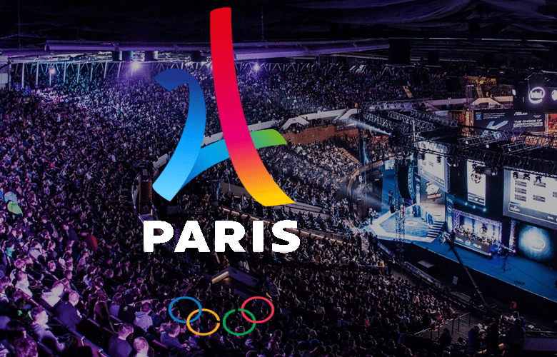

L'esport désigne la pratique sur Internet ou en LAN-party d'un jeu vidéo seul ou en équipe, par le biais d'un ordinateur ou d'une console de jeux vidéo. L'essor du sport électronique commence à la fin des années 1980 avec les premiers jeux en réseau multijoueurs et sur internet la Major League Gaming (MLG), la Cyberathlete Professional League (CPL) ou encore l'Evolution Championship Series (EVO). Le sport électronique à haut niveau est souvent financé par les sponsors et par les revenus générés par la diffusion en streaming.
